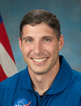

Lyndon B. Johnson Space Center
Houston, Texas 77058
|
National Aeronautics and Space Administration Lyndon B. Johnson Space Center Houston, Texas 77058 |
 |
Biographical Data |
||
Michael S. Hopkins (Colonel, U.S. Air Force)
NASA Astronaut
PERSONAL DATA: Born in Lebanon, Missouri, he grew up on a farm outside Richland, Missouri. Married to the former Julie Stutz of Peoria, Illinois. They have two sons. Recreational interests include backpacking, camping, snow skiing, weight lifting, running, hockey and football. His mother and stepfather, Barbara and Dennis Duffy, reside in Camdenton, Missouri. His father, Ogle Hopkins, is deceased and his stepmother, Paula Hertwig Hopkins, resides in Warrensburg, Missouri.
EDUCATION: School of the Osage High School, Lake of the Ozarks, Missouri, 1987; Bachelor of Science in Aerospace Engineering, University of Illinois, 1991; Master of Science in Aerospace Engineering, Stanford University, 1992.
SPECIAL HONORS: Team Captain, 1991 University of Illinois Football Team; Distinguished Graduate, Reserve Officers Training Corps, University of Illinois; Distinguished Graduate and top flight test engineer in United States Air Force Test Pilot School Class 96B; Defense Meritorious Service Medal; Meritorious Service Medal; Aerial Achievement Medal; two Air Force Commendation Medals and three Air Force Achievement Medals.
EXPERIENCE: Hopkins was commissioned as a second lieutenant in the United States Air Force in January 1992. In April 1993, he was assigned to Kirtland Air Force Base, Albuquerque, New Mexico, where he worked on advanced space system technologies. In 1996, he attended the flight test engineering course at the United States Air Force Test Pilot School, Edwards Air Force Base, California. Following graduation in 1997, he worked at the 418 Flight Test Squadron, testing C-17 and C-130 aircraft. In 1999, he moved to Cold Lake, Alberta, as an exchange officer with the Canadian Flight Test Center. In 2002, Hopkins was selected as an Olmsted Scholar by the George and Carol Olmsted Foundation. Following six months of language training at the Defense Language Institute in Monterey, California, he moved to Parma, Italy in 2003, where he studied political science at the Università degli Studi di Parma. In 2005, Hopkins was assigned to the United States Air Force Rapid Capabilities Office at the Pentagon, where he served as a project engineer and program manager. In 2008, Hopkins was selected as a special assistant to the Vice Chairman of the Joint Chiefs of Staff, where he worked until he commenced astronaut training.
NASA EXPERIENCE: Hopkins was selected in July 2009 as one of 14 members of the 20th NASA astronaut class. He graduated from Astronaut Candidate Training in November 2011, which included scientific and technical briefings, intensive instruction in International Space Station systems, Extravehicular Activity (EVA), robotics, physiological training, T 38 flight training and water and wilderness survival training.
Expedition 37/38 to the International Space Station - On September 25, 2013, Hopkins launched from the Baikonur Cosmodrome in Kazakhstan along with Russian cosmonauts Oleg Kotov and Sergey Ryazanskiy. They were welcomed to the space station by Expedition 37 commander Fyodor Yurchikhin of Roscosmos, Karen Nyberg of NASA and Luca Parmitano of the European Space Agency. They were later joined by Expedition 39 commander Koichi Wakata of the Japan Aerospace Exploration Agency (JAXA) and flight engineers Russian cosmonaut Mikhal Tyurin and U.S. astronaut Rick Mastracchio. During his stay aboard the space station, Hopkins and Mastracchio conducted a pair of U.S. spacewalks to change out a degraded pump module for a total of 12 hours and 58 minutes. Hopkins, Kotov and Ryazanskiy returned to Earth on March 10, 2014 after 166 days in space. During the expedition, the crew completed 2,656 orbits of the Earth and traveled more than 70 million miles.
MARCH 2014